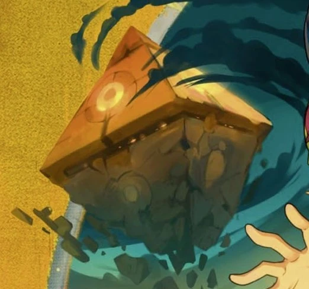
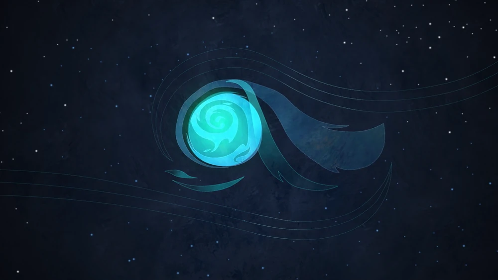
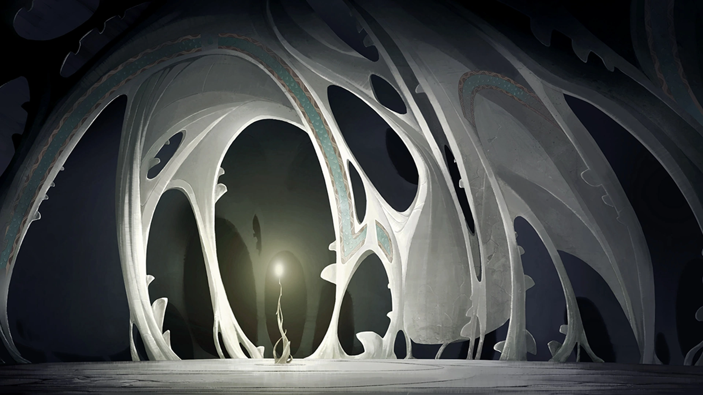

Tout en haut de l'œuf se trouve Incarnam, où entre le Wakfu et
l'Inglorium, là où vivent les Dieux. On appelle ça le Plan
Supérieur.
Plan Astral
Le Plan Astral quant à lui, est le lieu où se rencontrent et se
mélangent les rêves, les idées

Ether
Ensuite, vient l'Éther où Wakfu et Stasis se rencontrent et
envoient leurs particules sur le Plan Matériel. On peut y
trouver l'Arbre des Vagabonds et la Pyramide Ocre.

Plan Matériel
Le Plan Matériel est composé d'une infinité de galaxies et
systèmes solaires, ressemblant à l'univers tel qu'on le conçoit.
On peut y trouver la Planète Eliatrope, le Monde des Douze

Plan Inférieur
Tout en bas de l'œuf se trouve Externam, où entre la Stasis et
la Shukrute, là ou vivent les Démons, on appelle ça le Plan
Inférieur.